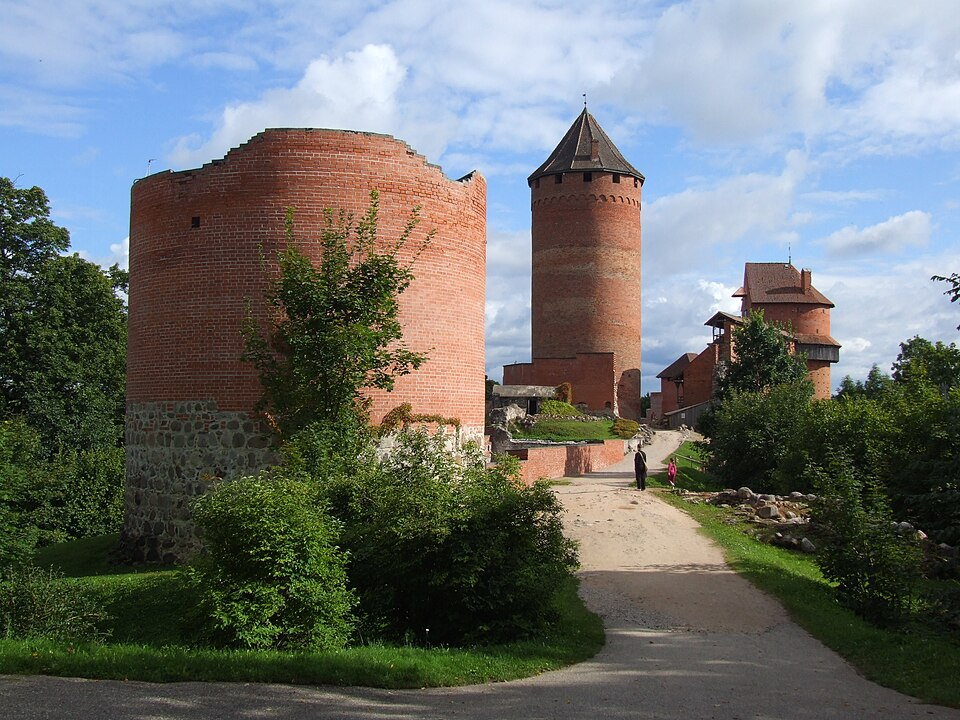
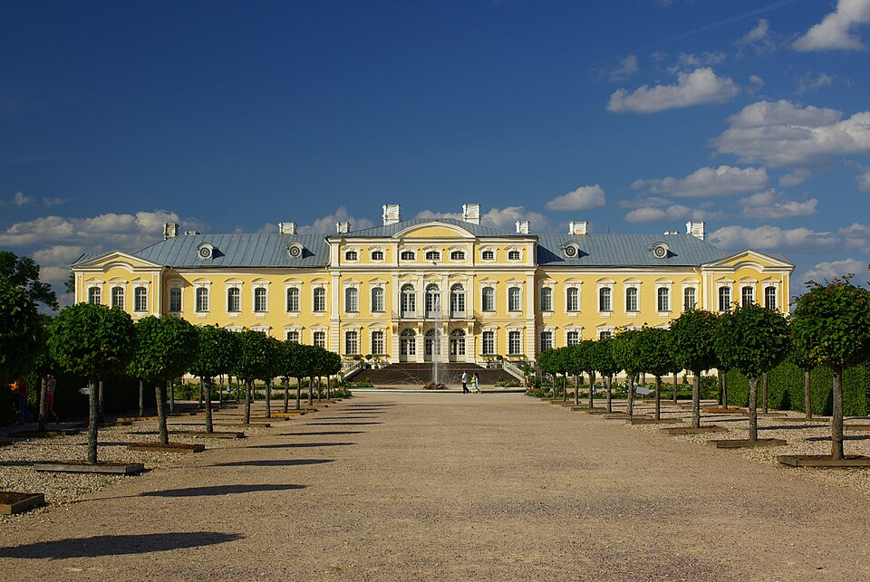
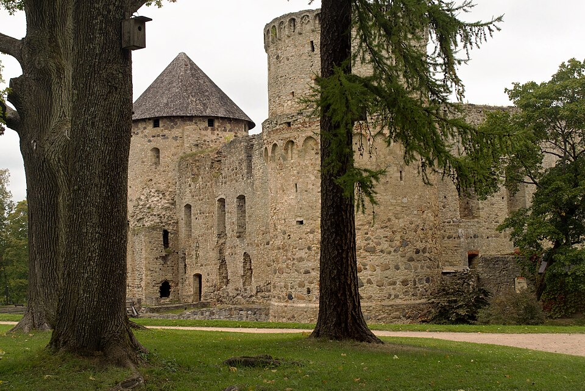
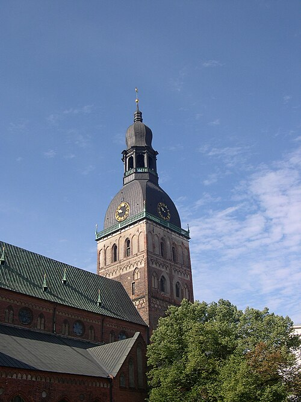
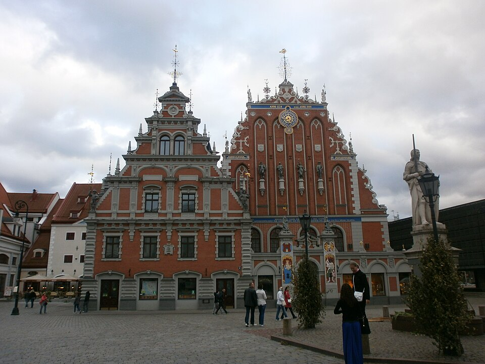
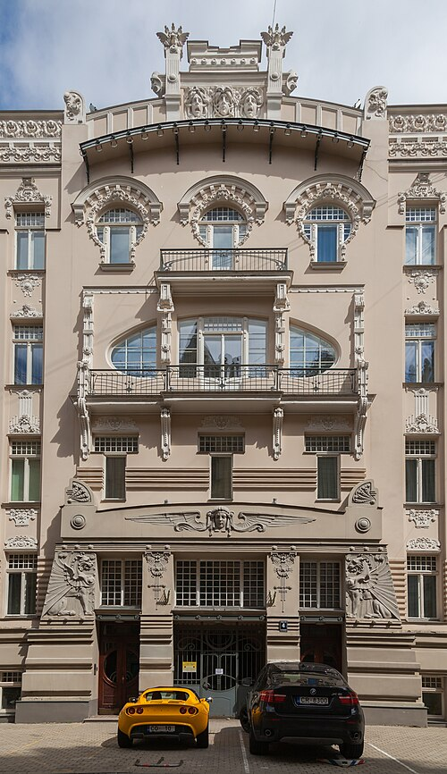
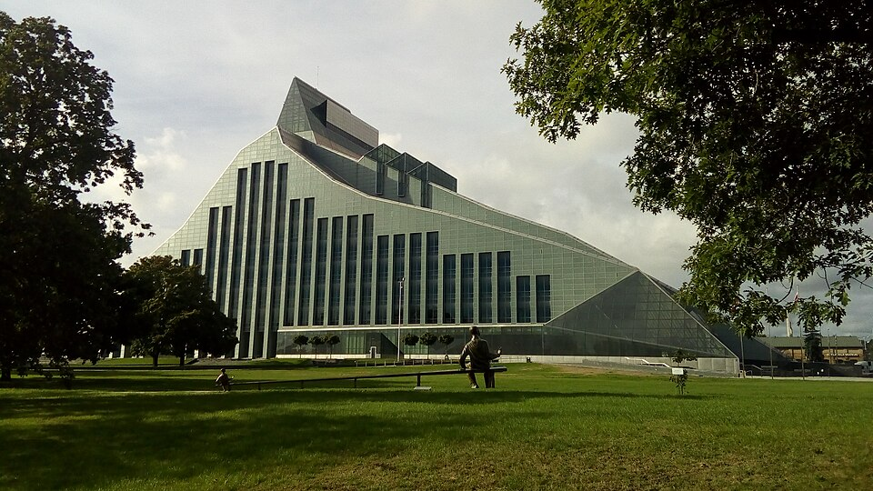
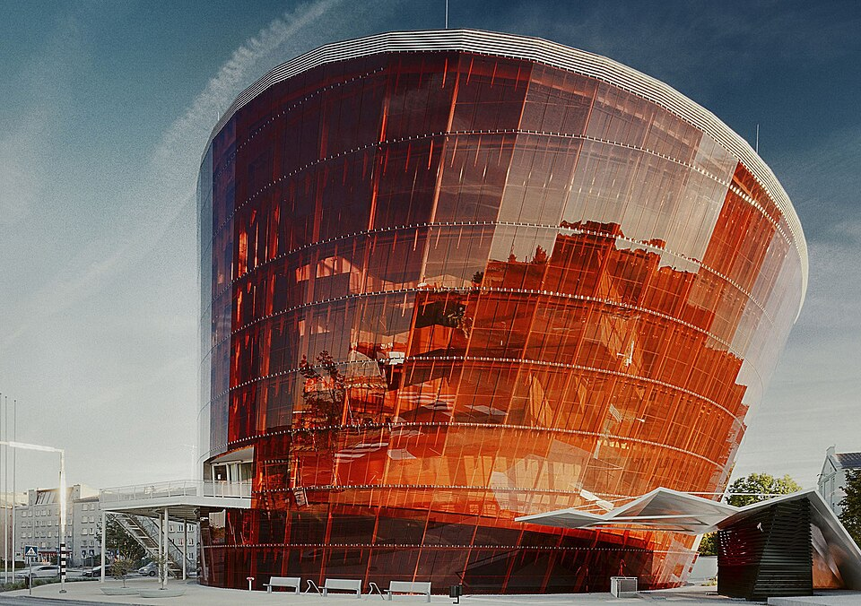

Turaidas pils
Vieta: Sigulda
Stils: Ķieģeļu gotika
Periods: 13.-16. gadsimts
Pils celtniecība sākās 1214. gadā. Tā bija nozīmīgs viduslaiku nocietinājums.
No viduslaiku pilīm līdz mūsdienu arhitektūrai.

Virtuālās izstādes mērķis ir iepazīstināt apmeklētājus ar Latvijas arhitektūru, tās vēsturi un dažādajiem arhitektūras stiliem.
Izstādē iespējams apskatīt viduslaiku pilis, greznas baroka ēkas, jūgendstila arhitektūru un mūsdienu celtnes. Katrs objekts atspoguļo sava laikmeta arhitektūras īpatnības.
Arhitektūras objekti
Gadsimti
Arhitektūras laikmeti

Vieta: Sigulda
Stils: Ķieģeļu gotika
Periods: 13.-16. gadsimts
Pils celtniecība sākās 1214. gadā. Tā bija nozīmīgs viduslaiku nocietinājums.

Vieta: Cēsis
Stils: Viduslaiku aizsardzības arhitektūra
Periods: 13.-16. gadsimts
Pils vairākkārt pārbūvēta un paplašināta. Mūsdienās tās drupas ir ievērojams vēstures piemineklis.

Vieta: Rīga
Stils: Romānika, gotika un baroks
Periods: No 1211. gada
Rīgas Doms ir vēsturiska katedrāle. Tā arhitektūra apvieno vairāku laikmetu stilus.

Vieta: Rīga
Stils: Vēsturiskā pilsētas arhitektūra
Periods: 1334. gads, atjaunots 1999. gadā
Ēka atrodas Rātslaukumā. Tā vēsturiski bija nozīmīga sabiedrisko pasākumu vieta.
Vieta: Pilsrundāle
Stils: Baroks un rokoko
Periods: 1736.-1768. gads
Pils celta pēc Frančesko Rastrelli projekta. Tā izceļas ar greznām telpām un franču stila dārzu.

Vieta: Rīga
Stils: Jūgendstils
Periods: 1904. gads
Ēku projektēja Mihails Eizenšteins. Tā izceļas ar bagātīgi dekorētu fasādi.

Vieta: Rīga
Stils: Ekspresīvais modernisms
Periods: 2008.-2014. gads
Ēku projektēja arhitekts Gunārs Birkerts. Bibliotēka ir pazīstama arī kā Gaismas pils.

Vieta: Liepāja
Stils: Mūsdienu arhitektūra
Periods: 2013.-2015. gads
Koncertzāli projektēja arhitekts Folkers Gīnke. Ēkas izskatu iedvesmojis dzintars.
Rundāles pils
Licences: CC BY 2.0, CC BY-SA 3.0, CC BY-SA 4.0.